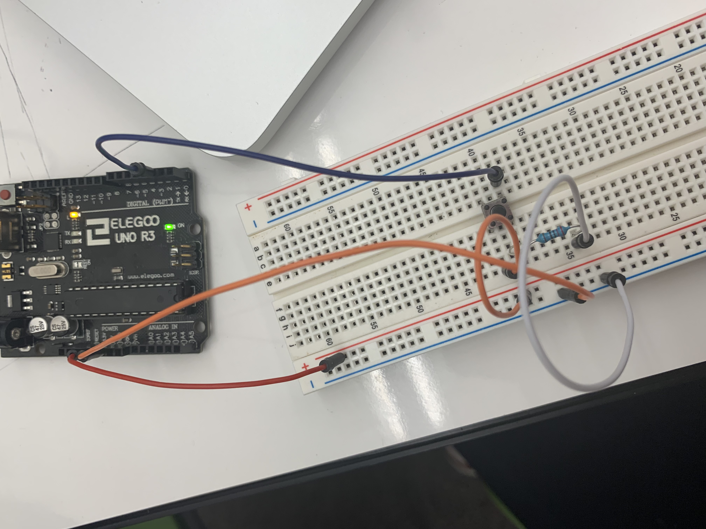

Carina's Assignment 6!
Wow. What a fresh assignment!.
Schematic
Circuit
Let's have a look at this thing in action!

Code Snippet
Here is the code I used! It is the sample that we used in class..
void setup() {
Serial.begin(9600);
}
void loop() {
int pot = digitalRead(2); //takes input from pin 2
Serial.println(pot); // prints out information to serial monitor
delay(50); //allows user to see change in button status
}